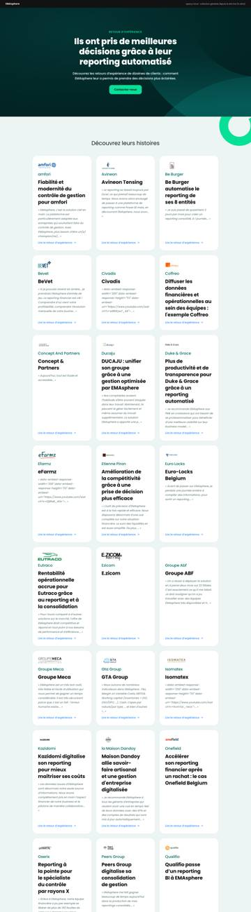
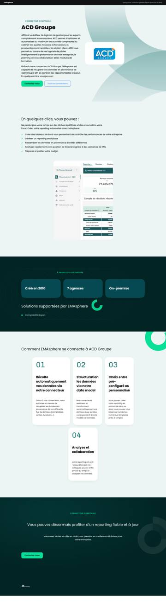
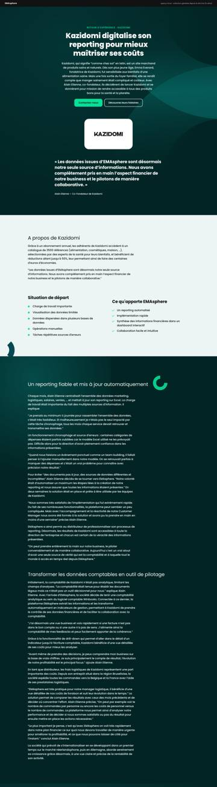

Accueilpage créée · nouveau messaging
Accueilpage créée · nouveau messaging IApage créée · nouveau messaging
IApage créée · nouveau messaging EMAspherepage créée · nouveau messaging
EMAspherepage créée · nouveau messaging Insights Platformpage créée · nouveau messaging
Insights Platformpage créée · nouveau messaging Data Foundationpage créée · nouveau messaging
Data Foundationpage créée · nouveau messaging Enrichissement & couche sémantiquepage créée · nouveau messaging
Enrichissement & couche sémantiquepage créée · nouveau messaging Analytics & décisions IApage créée · nouveau messaging
Analytics & décisions IApage créée · nouveau messaging Nos connecteurspage gardée · contenu du site actuel, rebrandé
Nos connecteurspage gardée · contenu du site actuel, rebrandé CFO stratégiquespage créée · nouveau messaging
CFO stratégiquespage créée · nouveau messaging Business Leaderspage créée · nouveau messaging
Business Leaderspage créée · nouveau messaging Éditeurs de logicielspage créée · nouveau messaging
Éditeurs de logicielspage créée · nouveau messaging Partenairespage créée · nouveau messaging
Partenairespage créée · nouveau messaging Clientspage créée · nouveau messaging
Clientspage créée · nouveau messaging
Retours d’expérience (index)page gardée · contenu du site actuel, rebrandé Notre histoirepage créée · nouveau messaging
Notre histoirepage créée · nouveau messaging Nous rejoindrepage créée · nouveau messaging
Nous rejoindrepage créée · nouveau messaging Acheter ou construirepage créée · nouveau messaging
Acheter ou construirepage créée · nouveau messaging EMAsphere vs BIpage créée · nouveau messaging
EMAsphere vs BIpage créée · nouveau messaging Données AI-readypage créée · nouveau messaging
Données AI-readypage créée · nouveau messaging Trésoreriepage gardée · contenu du site actuel, rebrandé
Trésoreriepage gardée · contenu du site actuel, rebrandé Budget & prévisionnelpage gardée · contenu du site actuel, rebrandé
Budget & prévisionnelpage gardée · contenu du site actuel, rebrandé Consolidationpage gardée · contenu du site actuel, rebrandé
Consolidationpage gardée · contenu du site actuel, rebrandé
Fiche connecteur · ACD Groupepage gardée · contenu du site actuel, rebrandé
Retour d’expérience · Kazidomipage gardée · contenu du site actuel, rebrandé